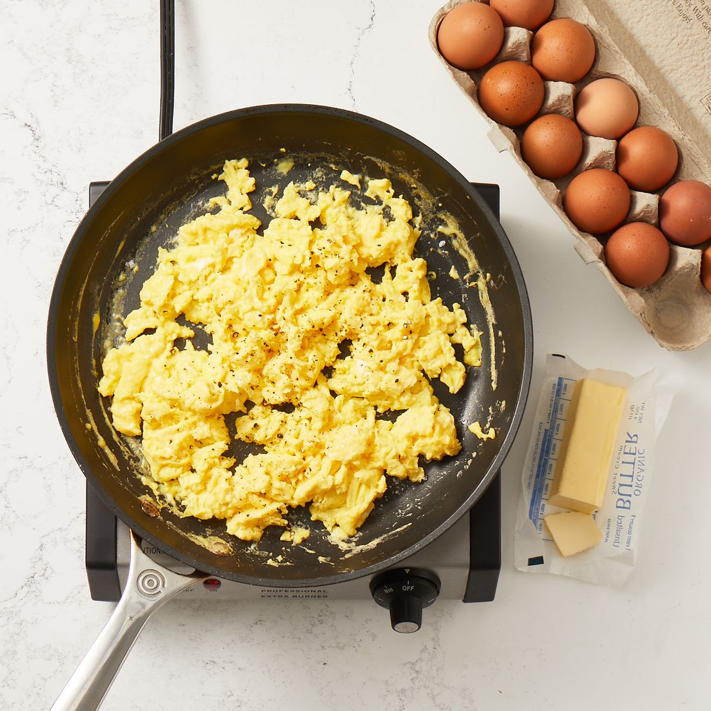

If there’s one ingredient we’ll never not be excited about, it’s the incredible, edible egg. It’s not because of the rich, sunny-yellow yolks or the way the whites crisp up when you fry them in hot oil (okay, it’s partly about those things): It’s the fact that we never run out of ways to use them. Check out some of our most beloved egg recipes, all of which put these protein-packed parcels of joy in the spotlight.
Melt butter in a 10- to 12-in. non-stick skillet on medium-low.
In a bowl, whisk together, eggs and ½ tsp each salt and pepper. Add to skillet and cook stirring often.
Once the eggs are nearly set, add desired toppings (think cheese, cooked veggies, herbs, tender greens like spinach or baby kale).